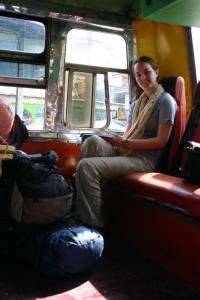

Le 29 décembre 2004,
 Nous partons ce matin en direction d’une petite ville du nom de lopburi. Le bus local qui nous y emmène n’a rien à voir avec les beaux bus climatisés que nous avons pris jusqu’à présent. Nous sommes secoués comme des pruniers durant ces deux heures, mais ça ne me dérange pas. Nous passons dans des petits villages ou campagnes environnantes très typiques et agréables à regarder de la fenêtre du bus. Ca change des traditionnelles autoroutes empruntées par les bus de luxe !
Arrivés à Lopburi, deux saamlaws (vélos-rickshaws) nous emmènent à notre hôtel. Ils n’ont pas l’air de comprendre un mot d’anglais dans cet hôtel, c’est assez comique d’essayer de se faire comprendre ! Nous partons chercher à manger sur les marches. Je teste une brochette de ce que je pensais être une sorte de poulet, mais il s’avère que ça n’y ressemble pas du tout au niveau du goût ! Je penche plus pour une espèce de raton-laveur ou de cochon d’inde voire de ragondin... Bref, ça me reste sur l’estomac durant toute l’après-midi ! Nous continuons tout de même notre visite a travers la ville. Des singes par centaine se baladent sur les toits des maisons ou s’accrochent aux fils électriques. Il y en a même un qui vole une bouteille de lait à une jeune fille revenant de faire ses courses. Ils ont l’air d’avoir tous les droits dans cette ville. Et comme ça porte de malheur de leur faire du mal, les habitants les laissent faire, au détriment de quelques nuisances comme des vols de nourriture ou des dégradations d’antennes de télévision...
Il est temps de penser au réveillon du jour de l’an ! Lopburi est une trop petite ville pour pouvoir y rester plus de 2 jours sans s’ennuyer. Nous passerons donc le jour de l’an à Phitsanulok, petite bourgade apparemment sympathique qui se trouve à quelques heures de route d’ici. A la gare, on nous annonce que tous les trains sont complets pour la journée du 31 décembre à part en 3ème classe avec les poules et la nourriture. Nous allons tout de même nous renseigner auprès des bus pour voir si nous ne pouvons pas en réserver un. A cause d’une mauvaise échelle sur le plan, nous mettons plus d’une heure à pieds pour arriver au terminal des bus... La-bas, impossible de trouver quelqu’un qui parle anglais !! Nous n’arrivons pas du tout à nous faire comprendre, c’est dingue ! Nous repartons finalement, déçus de n’avoir obtenu aucune information valable... Nous voyagerons donc en train de 3ème classe !! Il est temps de se mettre au thaïlandais si on veut arriver à se faire comprendre ici...
Nous mangeons le soir dans un excellent restaurant. Je me tape un crabe au curry délicieux ! Revenus à l’hôtel, nous profitons de la télévision dans la chambre avec une chaîne en français (TV5) pour regarder les infos suivis d’une pièce de théâtre jouée à Paris que nous avions failli aller voir avant de partir : "La presse est unanime".
Eve-Laure
Salut ma biquette,
J’ai hâte que tu nous racontes ton voyage en 3ème classe, ça va être une super expérience !
Pour la nouvelle année offre toi donc un massage thailandais ! Bisous Isa
{kind=link}
{kind=link}